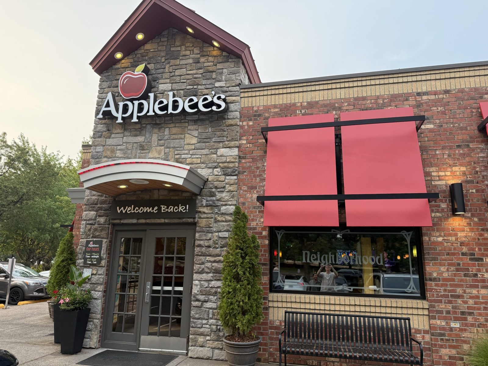
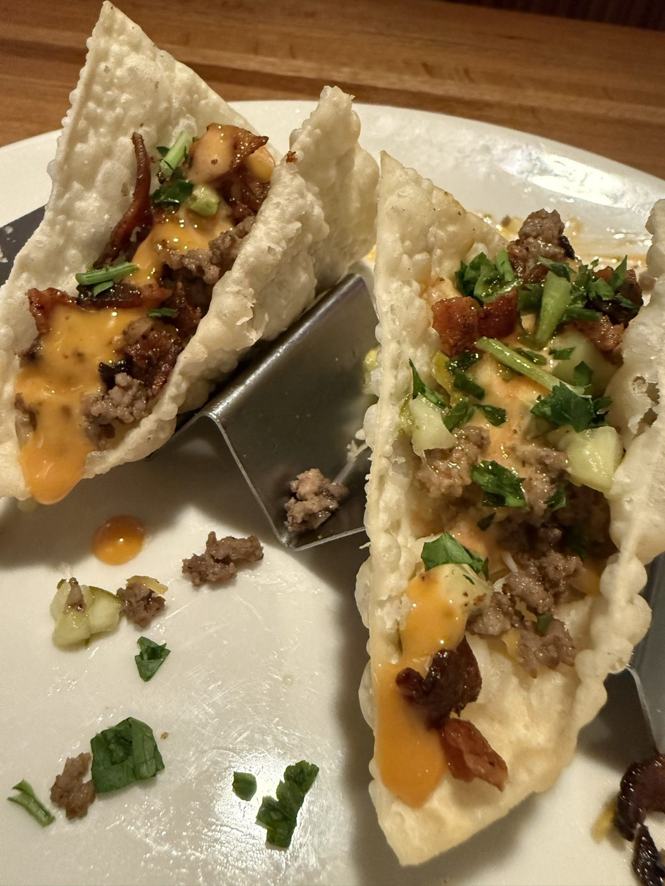
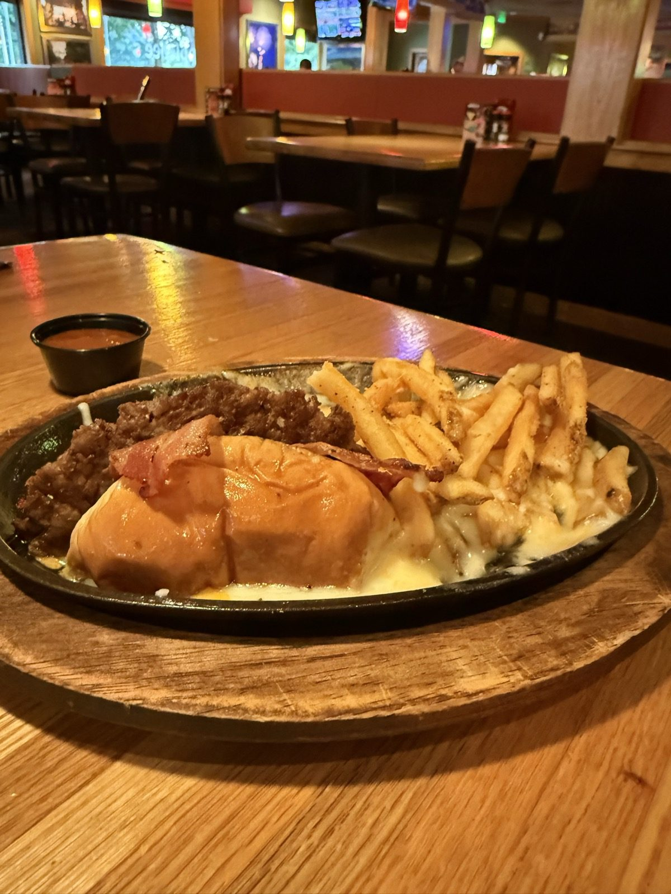
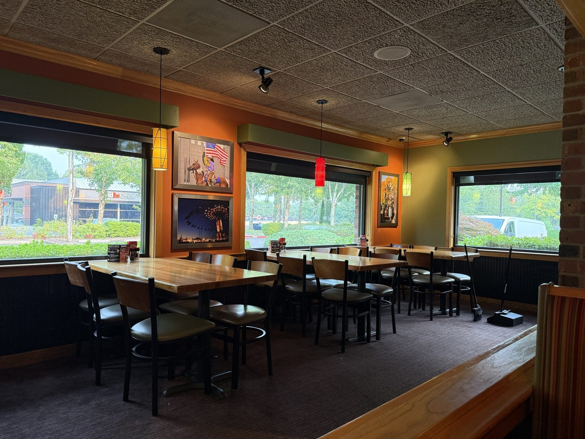
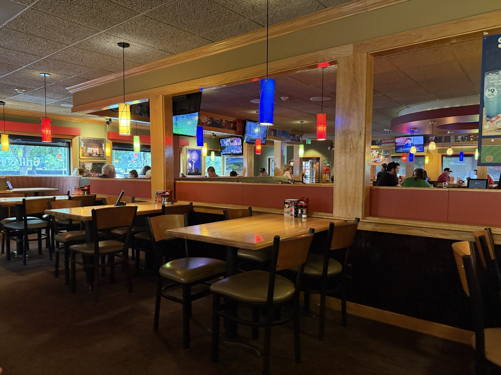
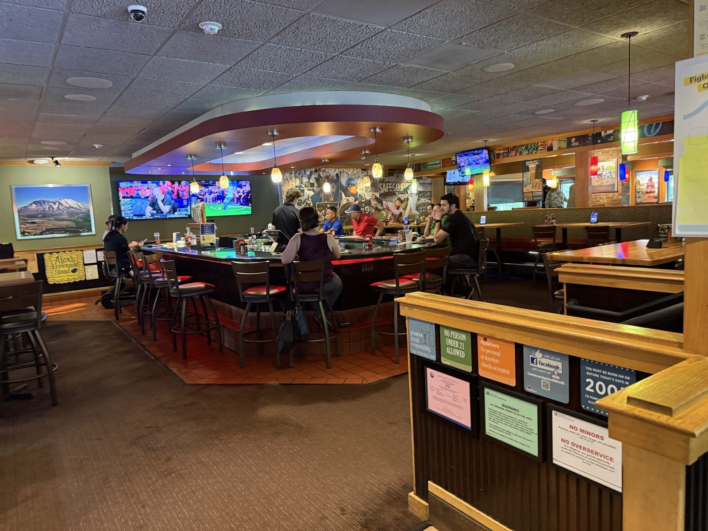

O-M-Cheese, and a Water Hole That Isn't Anymore

The Applebee's on SE 2nd Circle in Vancouver, Washington, has a new line over the door this year — Welcome Back! — and a window etched with the word Neighborhood, the same rebrand the chain has been rolling out at locations across the country. I went for one specific reason, which is that they've added a burger called the O-M-Cheese Burger, and it is now one of my favorite burgers anywhere. The hours are still posted on a stone pillar by the door, Sun–Thurs 11am–midnight and Fri–Sat 11am–1am, same as they've always been — about the only thing here that hasn't changed.
The tacos first
We started with the Bacon Cheeseburger Wonton Tacos — new on the menu alongside the burger, and, per the card, exactly what it sounds like: three crunchy wonton shells built like a cheeseburger, seasoned ground beef and melted Cheddar under Applewood-smoked bacon, chopped pickle, and a drizzle of spicy honey mustard. One of the three was already gone by the time I got the camera out, which is its own kind of review.

The O-M-Cheese Burger
Then the burger, which is what I actually came back to write about. It arrives on a sizzling black skillet, sitting in its own pool of melted cheese. The menu's line for it is that it "doesn't get any meltier than this," and for once a menu isn't overselling itself:
Served in a sizzling skillet of molten queso and a blend of Cheddar cheeses, our juicy, all-beef burger is topped with American cheese, Applewood-smoked bacon and spicy honey mustard.
That's the accurate description. Mine is shorter: it's cheesy — very cheesy, without being too cheesy, if you know what I mean. The queso lives underneath and around the patty rather than piled on top of it, so every bite gets it without the whole thing tipping over into a bowl of cheese with bread on the side. American cheese and the Applewood-smoked bacon do the rest of the work, and the honey mustard — spicy, not sweet — is what keeps three cheeses and bacon from collapsing into one flat note. It isn't only the new item, either. The food generally read as better here than I remember it being.

What happened to the bar
The room around it is a different story, and I've been coming to this Applebee's long enough to notice the change. There used to be a proper bar here — the kind of place people actually sat and lingered, a genuine gathering spot, a water hole, if you want the old word for it. Chain restaurants like this one used to hire actual decorators to fill that kind of room — Applebee's own supplier for years was a man named Joe Ley, who packed the walls with antique carousel horses and layers of kitschy wall hangings and curiosities, one region's junk-shop finds hung up as another region's atmosphere. Warm, cluttered, a little absurd, and entirely its own. That's mostly gone now, folded into the brighter "Neighborhood" remodel the sign out front is announcing: a rounder bar with red stools and a wall of televisions at the middle of the room, and past it a stretch hung with rows of colored paper lanterns and more screens, open to the dining room on both sides.


It isn't ugly, exactly. It's also not particular to anywhere — the lanterns and the televisions could be bolted into a hundred other rooms in a hundred other strip malls, which is precisely what the old bar wasn't. That one had a character this version has traded away for something brighter and easier to maintain, and I miss it. Not enough to skip the burger. Just enough to say so.

Is the O-M-Cheese Burger worth ordering?
Yes, without hesitation, and I'd order it again the next time I'm on this side of Vancouver. It's a new item, which on a chain menu means it's also the kind of thing that can quietly disappear in a few months — worth going for sooner rather than later if the description above sounds like your kind of trouble.
The practical bit
Applebee's — 12717 SE 2nd Cir, Vancouver, WA 98684, on the Mill Plain corridor near the I-205 interchange. 📍 Get directions
Hours: Sun–Thurs 11am–midnight · Fri–Sat 11am–1am — off the sign by the door.
Worth knowing: the O-M-Cheese Burger is $16.49 on its own, or it's one of the two entrées on the "2 for $25" deal (one appetizer, two entrées, $25 total) — the Bacon Cheeseburger Wonton Tacos are the appetizer worth picking for that deal.